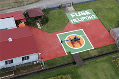
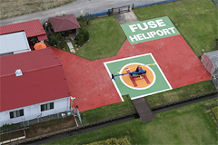

東京ヘリコプタークラブについて
東京ヘリコプタークラブは、ヘリコプターをもっと身近な存在に感じて欲しいという考えのもとに立ち上げられたコミュニティです。
ライセンス所持者のための飛行クラブから、これからライセンスを取得したいと考えていらっしゃる方の為のライセンスサポート、ヘリコプターを所持していらっしゃるオーナー様向けの維持費削減サービスや、格納庫を使ったレンタルスペースなど、ヘリコプターに関する様々なサービスを行っています。
各サービスについてはこちら東京ヘリコプタークラブは、ヘリコプターをもっと身近な存在に感じて欲しいという考えのもとに立ち上げられたコミュニティです。
ライセンス所持者のための飛行クラブから、これからライセンスを取得したいと考えていらっしゃる方の為のライセンスサポート、ヘリコプターを所持していらっしゃるオーナー様向けの維持費削減サービスや、格納庫を使ったレンタルスペースなど、ヘリコプターに関する様々なサービスを行っています。
各サービスについてはこちら